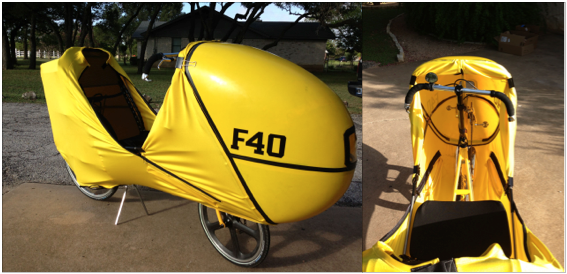

First training ride on the F-40
06 Aug 2013

How do you learn to ride a bike where you cannot see the peddles or the road right in front of you? Clip the spandex fairing partially open so that you can see your feet. Rode this way today for the first couple of miles around the neighborhood. Starting, stopping, clipping and unclipping.
After a couple of miles I zipped up the sides and rode with just the top open so that I could still see my feet. A couple of more miles and then I buttoned it completely up and rode the last four miles streamlined.
Pretty challenging today: Winds 16 mph gusting to 22 mph. Really glad I read the F-40 User’s Manual and now I understand what they mean when they say ‘stick your elbow out on the windward side when a gust hits’. When going through the neighborhood I’d be going slightly downhill riding the brakes around 26-29 mph with houses hiding the wind then POW, open area and the wind would gust me from the side pushing the bike 4 to 8 inches sideways. Once I could anticipate when the wind could possibly hit I’d already have my elbow out pretty much negating any wind gust.
There is no sensation of speed. On the straight and level, easy peddling, the bike is doing 15-17 mph. With the least little bit of decline the bike quickly accelerates to mid 20s. There is no wind noise. I kept riding the brakes every downhill and downwind because of the wind gusting.
People stop and stare. Not two minutes riding and I hear: “Wow, that is awesome looking!”. People take their earbuds out and start talking to me as soon as I get close. Lots of attention.
I’m going to need a few more training rides in the gusting wind before I’m ready for the open road.